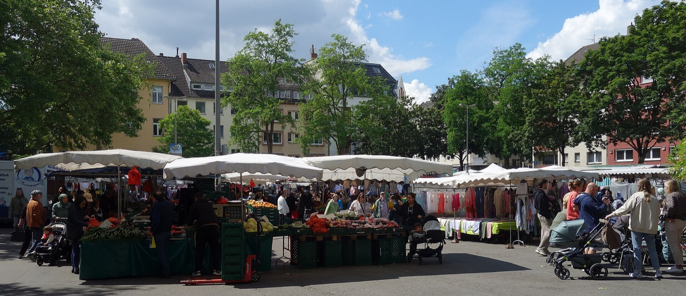
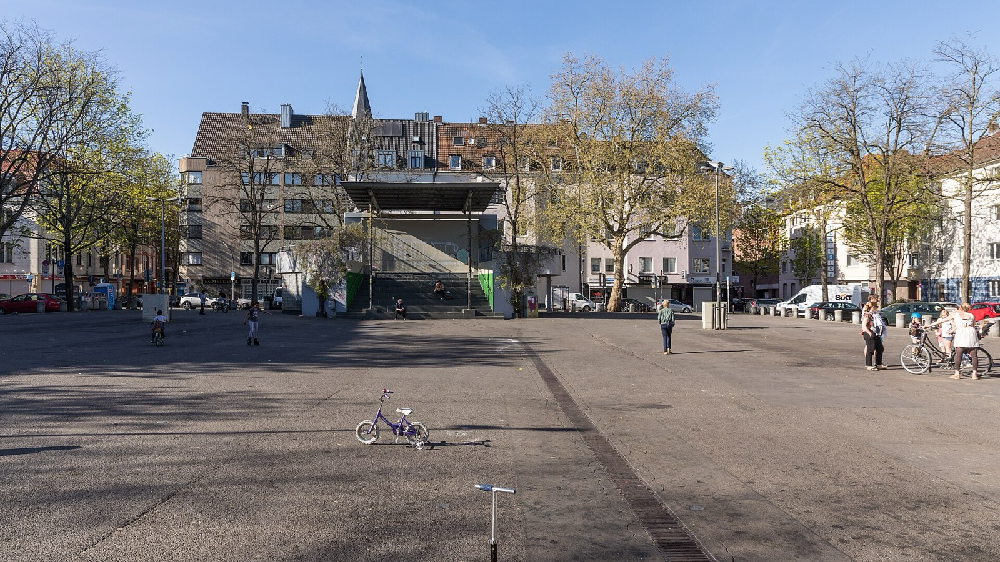
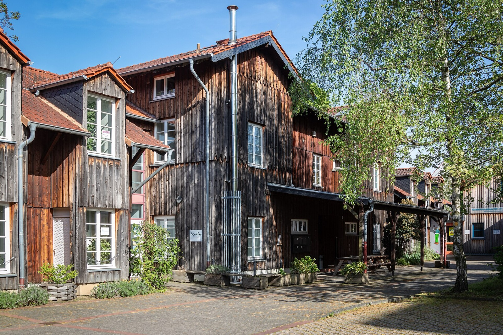

Immobilie in Köln-Nippes verkaufen?Ich kenne das Veedel, nicht nur den Markt.
Ich habe mehrere Jahre in Nippes gelebt und wohne heute direkt gegenüber der Agneskirche. In der Werkstattstraße habe ich vier Wohnungen bewertet, eine vermietet und eine verkauft.
Was könnte Ihre Immobilie in Köln-Nippes erzielen?
In sechs Schritten zu einer realistischen Einschätzung. Kostenlos, unverbindlich und ohne Vertrag. Womit fangen wir an?
Andere Objektart wählenIhre Konkurrenz steht nicht in einem anderen Veedel
In den meisten Kölner Stadtteilen ist die Frage beim Verkauf: Wie ordnet sich diese Immobilie in den Markt ein? In Nippes kommt eine zweite hinzu, die es sonst kaum irgendwo in dieser Schärfe gibt.
Auf dem ehemaligen Clouth-Gelände sind rund 1.000 neue Wohneinheiten entstanden. Wer hier eine Bestandswohnung verkauft, tritt nicht gegen Angebote in Ehrenfeld oder Sülz an, sondern gegen moderne Wohnungen im eigenen Stadtteil. Derselbe Käufer, der Ihre Wohnung besichtigt, kann am selben Nachmittag eine Neubauwohnung wenige hundert Meter weiter ansehen.
Der Grundstücksmarktbericht 2026 beziffert den Abstand: Bei 141 ausgewerteten Weiterverkäufen lag der Durchschnitt 2025 bei 4.590 Euro je Quadratmeter, bei 25 Neubauverkäufen bei 7.532 Euro. Das sind 64 Prozent mehr — 2.942 Euro auf jedem Quadratmeter.
Viele Eigentümer lesen diese Zahl als schlechte Nachricht. Ich lese sie umgekehrt.
Warum der Preisabstand für Sie spricht
Ein Käufer mit einem festen Budget kauft keinen Quadratmeterpreis. Er kauft eine Wohnung. Und bei 64 Prozent Aufschlag bedeutet der Neubau vor allem eines: deutlich weniger Fläche für dasselbe Geld.
Bei 500.000 Euro sind das im Bestand rechnerisch 109 Quadratmeter, im Neubau 66. Ein Unterschied von 43 Quadratmetern — das ist ein zusätzliches Zimmer, ein Arbeitsplatz, ein Kinderzimmer. Dazu kommen häufig größere Räume, gewachsene Grundrisse, vorhandene Stellplätze und Außenflächen.
Diese Rechnung muss ein Käufer aber erst einmal aufmachen. Wenn sie erst bei der zweiten Besichtigung auffällt, ist der Vergleich womöglich schon zugunsten des Neubaus entschieden.
Wie viel Wohnfläche bekommt ein Käufer für dasselbe Geld — im Bestand und im Neubau?
Unterschied: 43 m² mehr Wohnfläche im Bestand
Die Rechnung nutzt die Durchschnittswerte des Grundstücksmarktberichts 2026 für Köln-Nippes. Sie ersetzt keine Bewertung und sagt nichts über eine konkrete Wohnung — sie zeigt nur die Größenordnung, in der sich Bestand und Neubau unterscheiden. Was Ihre Wohnung tatsächlich erzielen kann, klärt die kostenlose Bewertung.
Was 2025 in Nippes tatsächlich bezahlt wurde
Mit 141 ausgewerteten Weiterverkäufen ist Nippes der Stadtteil mit der breitesten Datengrundlage, an dem ich arbeite — zum Vergleich: Rodenkirchen kommt auf 79, Niehl auf 75, Sürth auf 37. Das macht den Durchschnitt belastbarer, ohne ihn zu einem Preisschild zu machen.
| Segment | Fälle | Wert |
|---|---|---|
| Weiterverkauf, Ø je m² Wohnfläche | 141 | 4.590 € |
| Neubau, Ø je m² Wohnfläche | 25 | 7.532 € |
| Bodenrichtwert, Spanne | 5 Zonen | 1.100 – 1.840 €/m² |
| Bodenrichtwert, Median | — | 1.620 €/m² |
| Wohnungsbestand im Stadtteil | — | 21.067 |
Gutachterausschuss für Grundstückswerte in der Stadt Köln (Grundstücksmarktbericht 2026, Berichtsjahr 2025), BORIS NRW zum 1. Januar 2026 und Stadt Köln, Wohnungsbestand zum 31. Dezember 2025.
Die fünf Bodenrichtwertzonen spreizen um zwei Drittel — von 1.100 bis 1.840 Euro. Für ein Grundstück ist deshalb die Zonenzugehörigkeit die erste Frage, nicht der Median. Und auch der Zonenwert ist ein Ausgangspunkt: Zuschnitt, Bebaubarkeit, Geschossflächenzahl, Erschließung und Entwicklungsmöglichkeiten verschieben ihn in beide Richtungen.
Bei Häusern halte ich es in Nippes für unseriös, aus wenigen vergleichbaren Verkäufen einen scheinbar exakten Quadratmeterpreis abzuleiten. Ein Haus sollte als Gesamtobjekt betrachtet werden — Gebäude, Grundstück, Zustand und Nutzungsmöglichkeiten zusammen.
Altbau in Nippes: Ist das Alter wirklich ein Nachteil?
Nicht unbedingt — manchmal ist das Gegenteil der Fall. Rund um den Leipziger Platz prägen gründerzeitliche Gebäude und zahlreiche Baudenkmäler das Straßenbild. Im Mai 2026 hat die Stadt Köln für ein rund 14 Hektar großes Gebiet ein Bebauungsplanverfahren eingeleitet, unter anderem mit dem Ziel, charakteristische Vorgartenzonen und historische Strukturen zu schützen.
Für Eigentümer heißt das: Die Eigenart dieser Quartiere ist nicht dem Zufall überlassen, sondern soll erhalten bleiben. Was ein Käufer beim Betreten einer solchen Wohnung wahrnimmt, entscheidet trotzdem er selbst — entweder ein älteres Gebäude, oder hohe Decken, besondere Raumproportionen, historische Details und eine Architektur, die ein moderner Neubau nicht bieten kann.
Diese Wahrnehmung lässt sich nicht durch Aufzählung im Exposé erzeugen. Der Käufer muss erkennen, warum genau diese Eigenschaften für ihn einen Mehrwert haben — sonst bleibt der Altbau in seinem Kopf einfach das ältere von zwei Angeboten.

Werkstattstraße: was ich hier selbst gemacht habe
Nippes kenne ich nicht nur aus Marktberichten. Ich habe hier mehrere Jahre gelebt und wohne heute direkt gegenüber der Agneskirche, unmittelbar am Stadtteil. Seit meinem sechzehnten Lebensjahr bin ich regelmäßig hier unterwegs, und auch meine Familie lebt seit vielen Jahren in Nippes.
Werkstattstraße, Köln-Nippes
- Bewertungen
- vier
- Vermietung
- eine Wohnung
- Verkauf
- rund 70 m² für 350.000 €
- Vorbereitung
- Renovierung vor der Vermarktung
Das entspricht rund 5.000 Euro je Quadratmeter und liegt damit knapp neun Prozent über dem Durchschnitt der 141 ausgewerteten Weiterverkäufe. Der Unterschied kam nicht aus einer besonderen Lage — die Werkstattstraße liegt unmittelbar am Clouth-Quartier, also dort, wo der Vergleich mit dem Neubau am direktesten ist. Er kam aus der Vorbereitung: Die Wohnung wurde vor der Vermarktung renoviert.
Auch in der Xantener Straße war ich bereits tätig. Dadurch kenne ich dieses Umfeld aus verschiedenen Perspektiven — als Bewerter, als Vermieter und als Verkäufer.
Die gefährlichste Konkurrenz ist nicht die billigere Wohnung
Viele Eigentümer schauen vor dem Verkauf zuerst darauf, welche vergleichbare Immobilie günstiger oder teurer angeboten wird. Ich stelle eine andere Frage: Welche Wohnung würde derselbe Käufer noch besichtigen? Genau die ist Ihre tatsächliche Konkurrenz.
Stellen Sie sich einen Interessenten vor, der an einem Samstag drei Wohnungen in Nippes besichtigt. Welche davon beschäftigt ihn am Abend noch? Bei welcher sagt er: „Die sollten wir nicht verlieren."
Bevor ich eine Immobilie vermarkte, möchte ich deshalb drei Dinge wissen: Welche Objekte konkurrieren tatsächlich mit Ihrem? Wo liegt im direkten Vergleich die größte Stärke? Und gibt es vor der Vermarktung etwas, das wir verbessern oder deutlicher herausstellen sollten?
Welche Käufer zahlen für genau Ihre Lage?
Nippes ist nicht überall gleich. Schon wenige Straßen verändern, welche Käufer sich für eine Immobilie interessieren — und welche Eigenschaften für sie wertvoll sind. Je genauer eine Immobilie positioniert wird, desto weniger muss sie ausschließlich über den Preis konkurrieren.
- Wilhelmplatz, Neusser Straße, Florastraße
- Geschäfte, Gastronomie, Wochenmarkt, Dienstleistungen und öffentliche Verkehrsmittel liegen nah beieinander. Für Singles, Paare und Berufstätige ein erheblicher Vorteil, weil viele Alltagswege zu Fuß funktionieren. „Zentrale Lage" reicht als Aussage trotzdem nicht — die Frage ist, was ein Käufer von dieser Wohnung aus konkret erreicht.
- Werkstattstraße und Clouth-Umfeld
- Hier ist die richtige Positionierung besonders wichtig, weil Käufer Bestandswohnungen unmittelbar mit modernen Angeboten vergleichen können. Mehr Wohnfläche fürs Budget, ein besser nutzbarer Grundriss, ein ruhiger Innenhof, ein Balkon oder ein Stellplatz müssen sichtbar werden, bevor nur noch Preise verglichen werden.
- Ruhigere Seitenstraßen
- Eine größere Wohnung abseits der Hauptachsen spricht eher Familien an. Dann zählen Zimmerzahl, Raumaufteilung im Alltag, ruhig liegende Schlaf- und Kinderzimmer sowie Balkon, Terrasse oder Garten.
- Die Position innerhalb der Straße
- Eine Wohnung unmittelbar an einer stark befahrenen Straße wird anders wahrgenommen als eine mit Schlafzimmer zum Innenhof. Solche Unterschiede gehören herausgearbeitet, statt die Lage allgemein zu beschreiben.

Nippes in Zahlen
Marktdaten Köln-Nippes
- Bodenrichtwert
- 1.100–1.840 €/m²Median 1.620 · 5 Zonen · Stichtag 1.1.2026
- Wohnung, Weiterverkauf
- 4.590 €/m²141 Kaufverträge 2025
- Wohnung, Neubau
- 7.532 €/m²25 Kaufverträge 2025
Amtliche Werte — Quellen und Methodik.
Bebauung in Köln-Nippes
Viele Gründerzeit- und Jugendstilfassaden an Schwerinstraße, Leipziger Platz und Eisenachstraße. Auf dem früheren Gummiwerksgelände ist seit 2015 mit dem Clouth-Quartier ein Neubaugebiet mit über 1.000 Wohneinheiten entstanden.
Lage und Infrastruktur
S 6 und S 11, Stadtbahn 12, 13 und 15, dazu sechs Buslinien. Das Leonardo-da-Vinci-Gymnasium betreibt ein Planetarium und zwei Sternwarten. Nippeser Tälchen, Lohsepark und Johannes-Giesberts-Park als Grünflächen, Wochenmarkt am Wilhelmplatz seit rund 1900.
Wohnungsbestand in Zahlen
Von den 21.233 Haushalten bestehen 58 % aus einer Person (Köln: 52 %), 16 % leben mit Kindern (Köln: 18 %). Das prägt die Nachfrage: gefragt sind kompakte, gut geschnittene Wohnungen in fußläufiger Lage. Auf jeden der 37.088 Einwohner entfallen 40 m² Wohnfläche (Köln: 41 m²), das Durchschnittsalter liegt bei 42,1 Jahren gegenüber 42,7 in der Gesamtstadt. Der Abstand zum Kölner Wert beträgt gut ein halbes Jahr und trägt zur Einschätzung einer einzelnen Immobilie nichts bei. Stadt Köln, Statistischer Datenkatalog 2025.
Alle genannten Werte ordnen ein, sie ersetzen keine Bewertung. Den Wert Ihres Objekts ermitteln wir kostenlos und unverbindlich, auf Wunsch bei einem Termin bei Ihnen.
Die wichtigsten Fragen vor dem Verkauf in Nippes
Bei 141 ausgewerteten Weiterverkäufen lag der Durchschnitt 2025 bei 4.590 Euro je Quadratmeter. Das ist die breiteste Datengrundlage aller Stadtteile, an denen ich arbeite — aber kein Preisschild. Zustand, Modernisierung, Etage, Aufzug, Balkon, Grundriss, Hausgeld, Erhaltungsrücklage und beschlossene Maßnahmen der Eigentümergemeinschaft verschieben den Wert erheblich.
Auf dem Clouth-Gelände sind rund 1.000 Wohneinheiten entstanden. Ihre Konkurrenz steht damit im eigenen Stadtteil, nicht in einem anderen Veedel. Das ist aber kein Nachteil: Der Neubau kostet 64 Prozent mehr je Quadratmeter, was für denselben Betrag deutlich weniger Fläche bedeutet. Bei 500.000 Euro sind das rechnerisch 109 Quadratmeter im Bestand gegenüber 66 im Neubau. Dieser Vorteil muss allerdings sichtbar gemacht werden, bevor ein Käufer nur noch Preise vergleicht.
Neubaukäufer erwarten aktuelle Energiestandards, moderne Haustechnik und Erstbezug. Bei 25 ausgewerteten Neubauverkäufen lag der Durchschnitt bei 7.532 Euro je Quadratmeter gegenüber 4.590 im Bestand. Eine Bestandswohnung bietet dafür oft mehr Fläche fürs Budget, größere Räume, gewachsene Grundrisse und vorhandene Außenflächen oder Stellplätze.
Nicht unbedingt — manchmal ist das Gegenteil der Fall. Rund um den Leipziger Platz prägen gründerzeitliche Gebäude und Baudenkmäler das Straßenbild; im Mai 2026 hat die Stadt Köln für ein rund 14 Hektar großes Gebiet ein Bebauungsplanverfahren eingeleitet, unter anderem zum Schutz der Vorgartenzonen und historischer Strukturen. Hohe Decken, Raumproportionen und historische Details kann ein Neubau nicht bieten. Entscheidend ist, dass der Käufer erkennt, warum genau diese Eigenschaften für ihn einen Mehrwert haben.
BORIS NRW weist zum 1. Januar 2026 fünf Wohnbauland-Zonen zwischen 1.100 und 1.840 Euro je Quadratmeter aus, der Median liegt bei 1.620 Euro. Schon diese Spanne zeigt, dass es keinen einheitlichen Grundstückspreis für Nippes gibt. Entscheidend sind zusätzlich Größe, Zuschnitt, Bebaubarkeit, Geschossflächenzahl, Erschließung, vorhandene Bebauung, Baulasten und Entwicklungsmöglichkeiten.
Bei Häusern liegen im Stadtteil nur wenige vergleichbare Verkäufe vor. Daraus einen scheinbar exakten Quadratmeterpreis abzuleiten, halte ich für unseriös. Ein Haus sollte als Gesamtobjekt betrachtet werden: Wohnfläche und Grundstück, Baujahr und Sanierungsstand, Energieeffizienz und Heiztechnik, Grundriss, Garten, Terrasse, Stellplätze sowie Ausbau- und Erweiterungsmöglichkeiten.
Nicht unbedingt die günstigere. Die entscheidende Frage lautet: Welche Wohnung würde derselbe Käufer noch besichtigen? Stellen Sie sich einen Interessenten vor, der an einem Samstag drei Wohnungen in Nippes ansieht — welche beschäftigt ihn am Abend noch? Genau diesen Gedanken möchte ich bei einer Vermarktung erzeugen, und zwar nicht mit Formulierungen wie „attraktive Lage“, sondern damit, was Ihre Immobilie für den passenden Käufer besonders macht.
Ja. Rund um Wilhelmplatz, Neusser Straße und Florastraße liegen Geschäfte, Gastronomie, Wochenmarkt und Verkehrsmittel nah beieinander — für Singles, Paare und Berufstätige ein Vorteil, weil viele Wege zu Fuß funktionieren. Eine größere Wohnung in einer ruhigeren Seitenstraße spricht dagegen eher Familien an. Und selbst innerhalb einer Straße macht es einen Unterschied, ob das Schlafzimmer zur Straße oder zum Innenhof liegt.
Ja. In der Werkstattstraße habe ich vier Bewertungen durchgeführt, eine Wohnung vermietet und eine knapp 70 Quadratmeter große Wohnung nach vorheriger Renovierung für 350.000 Euro verkauft — rund 5.000 Euro je Quadratmeter. Auch in der Xantener Straße war ich tätig. Dazu kommt, dass ich selbst mehrere Jahre in Nippes gelebt habe und heute unmittelbar am Stadtteil wohne.
Das hängt vom Objekt ab. Bei der Wohnung in der Werkstattstraße hat sich die Renovierung vor der Vermarktung gelohnt. Entscheidend ist, ob eine Maßnahme voraussichtlich mehr einbringt, als sie kostet — und gerade in Nippes, wo der Neubau als Vergleich direkt nebenan steht, wirkt ein gepflegter Gesamteindruck stärker als anderswo.
Nein. Die Bewertungsanfrage ist kostenlos und unverbindlich. Durch die Anfrage entsteht kein Maklerauftrag.
Bildnachweis: Wochenmarkt Wilhelmplatz: Mabit1 · Clouth-Tor 1: Dr. Schorsch · Wilhelmplatz: Raimond Spekking · Werkstattstraße 100: Asperatus · Alter Worringer Bahnhof: Superbass, alle CC BY-SA 4.0 über Wikimedia Commons. Marktdaten: Gutachterausschuss für Grundstückswerte in der Stadt Köln (Grundstücksmarktbericht 2026, Berichtsjahr 2025), BORIS NRW zum 1. Januar 2026, Stadt Köln (Wohnungsbestand zum 31. Dezember 2025, Bauleitplanung Leipziger Platz, Clouth-Quartier). Verkaufsreferenz: eigene Verkaufserfahrung von Highseller Immobilien & Finanzen.